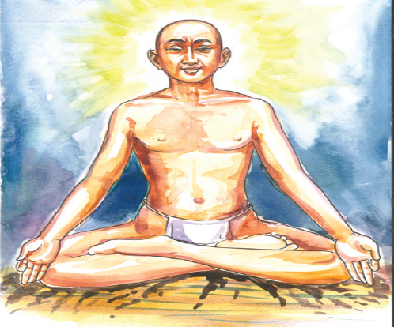

நுழையும் முன்
அற இலக்கியங்கள் நம் முன்னோர்களின் வாழ்க்கை அனுபவங்களை உள்ளடக்கியவை. அவை வாழ்வியல் நெறிகளையும் ஒழுக்கங்களையும் விளக்குபவை. நம் தமிழ் இலக்கியங்கள் காட்டும் வாழ்வியல் நெறிகள் உலகம் முழுமைக்கும் பொதுவானவை. அற இலக்கியங்கள் கூறும் கருத்துக்களைக் கடைப்பிடித்து வாழ்வதே சிறந்த வாழ்வு. அவற்றை நாமும் பின்பற்றுவோம்; வாழ்வை வளமாக்குவோம்.
தம்உயிர்போல் எவ்வுயிரும் தானென்று தண்டருள்கூர்
செம்மையருக்கு ஏவல்என்று செய்வேன் பராபரமே! (ஸ்டார் குறியீடு உள்ளது)
அன்பர்பணி செய்யஎனை ஆளாக்கி விட்டுவிட்டால்
இன்பநிலை தானேவந்து எய்தும் பராபரமே!
எல்லாரும் இன்புற்று இருக்க நினைப்பதுவே
அல்லாமல் வேறொன்று அறியேன் பராபரமே! (ஸ்டார் குறியீடு உள்ளது)
தாயுமானவர்
சொல்லும் பொருளும்
தண்டருள் – குளிர்ந்த கருணை
கூர் – மிகுதி
செம்மையருக்கு – சான்றோருக்கு
ஏவல் – தொண்டு
பராபரமே – மேலான பொருளே
பணி – தொண்டு
எய்தும் – கிடைக்கும்
எல்லாரும் – எல்லா மக்களும்
அல்லாமல் – அதைத்தவிர
பாடலின் பொருள்
அனைத்து உயிர்களையும் தம் உயிர்போல் கருதும் கருணை மிகுந்த சான்றோர்க்குத் தொண்டு செய்ய வேண்டும்
அன்பர்களுக்குத் தொண்டு செய்பவராக என்னை ஆக்கிவிட்டால் போதும். இன்பநிலை தானே வந்து சேரும்.
எல்லாரும் இன்பமாக வாழு வேண்டும். அதைத்தவிர, வேறு எதையும் நினைக்க மாட்டேன்.
நூல் வெளி
இப்பாடலை எழுதியவர் தாயுமானவர். திருச்சியை ஆண்ட விசயரகுநாத சொக்கலிங்கரிடம் தலைமைக் கணக்கராகப் பணி புரிந்தவர்.

இப்பகுதி தாயுமானவர் பாடல்கள் என்னும் நூலில் உள்ளது. இந்நூலைத் தமிழ் மொழியின் உபநிடதம் எனப் போற்றுவர். இப்பாடல்கள் ‘பராபரக் கண்ணி’ என்னும் தலைப்பில் உள்ளன. ‘கண்ணி’ என்பது இரண்டு அடிகளில் பாடப்படும் பாடல்வகை.
கற்பவை கற்றபின்
1 தம்+உயிர் என்பதனைச் சேர்த்து எழுதக் கிடைக்கம் சொல் டேஷ்
அ) தம்முயிர்
ஆ) தமதுயிர்
இ) தம்உயிர்
ஈ) தம்முஉயிர்
2 இன்புற்று+இருக்க என்பதனைச் சேர்த்து எழுதக் கிடைக்கம் சொல் டேஷ்
அ) இன்புற்றிருக்க
ஆ) இன்புறுறிருக்க
இ) இன்புற்றுஇருக்க
ஈ) இன்புறுஇருக்க
3 ‘தானென்று ‘என்னும் சொல்லைப் பிரித்து எழுதக் கிடைப்பது டேஷ்
அ) தானெ+என்று
ஆ) தான்+என்று
இ) தா+னென்று
ஈ) தான்+னென்று
4 கோம்பல் என்னும் சொல்லுக்குரி பொருத்தமான எதிர்ச்சொல் டேஷ்
அ) அழிவு
ஆ) துன்பம்
இ) சுறுசுறுப்பு
ஈ) சோகம்
பராபரக்கண்ணி பாடலில் இடம் பெற்றுள்ள எதுகை, மோனைச் சொற்களை எடுத்து எழுதுக.
1 யாருக்குத் தொண்டு செய்ய வேண்டும்?
2 இன்பநிலை எப்போது வந்து சேரும்?
பராபரக்கண்ணியில் தாயுமானவர் கூறுவன யாவை?
குளிரால் வாடுபவர்களுக்கு நீங்கள் எவ்விதம் உதவுவீர்கள்?